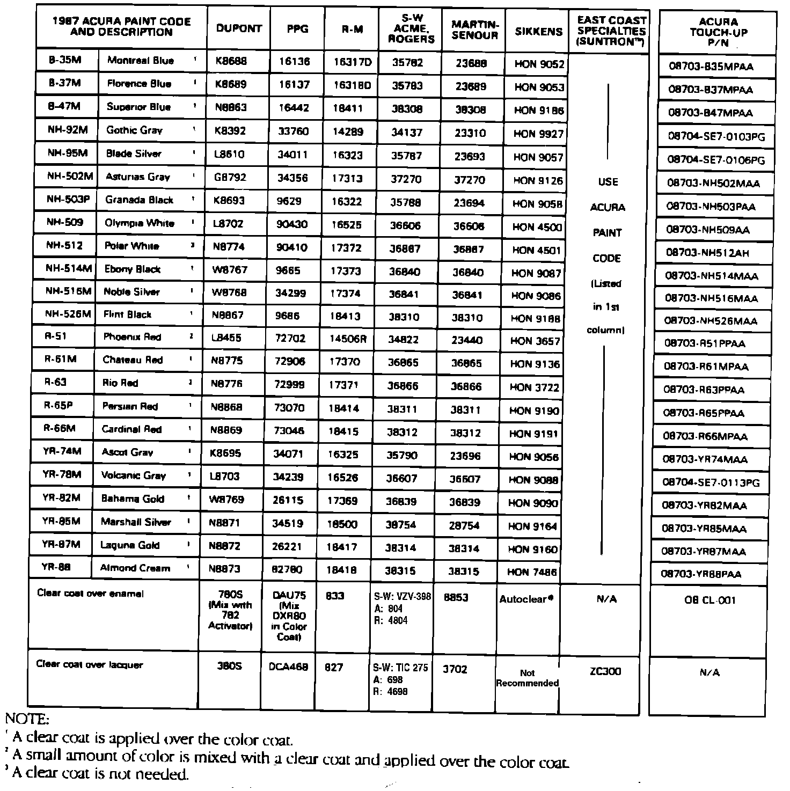
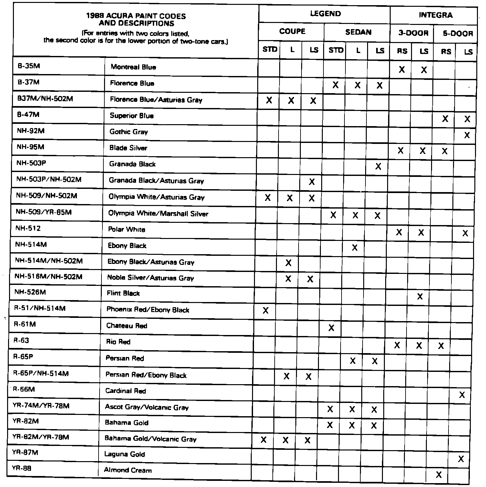

Paint Code Identification
November 23, 1987BULLETIN NO. 87-034
YEAR 1988
MODEL ALL
APPLICATION ALL
1988 Acura Paint Codes
Paint formulations are determined by each paint company. For questions regarding formulas or matching, contact your local paint distributor or the paint company's nearest regional office.


The original paint is acrylic enamel. Acura paint codes which include "M" or "P" are metallic colors.